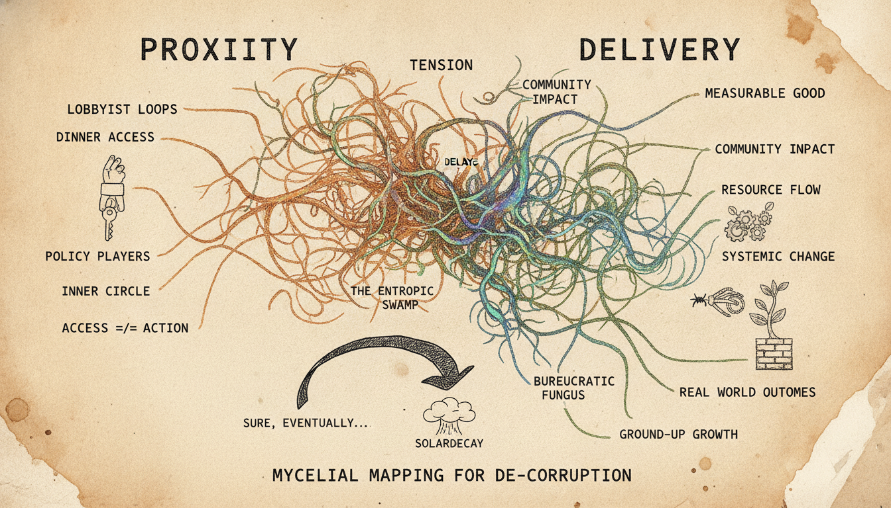
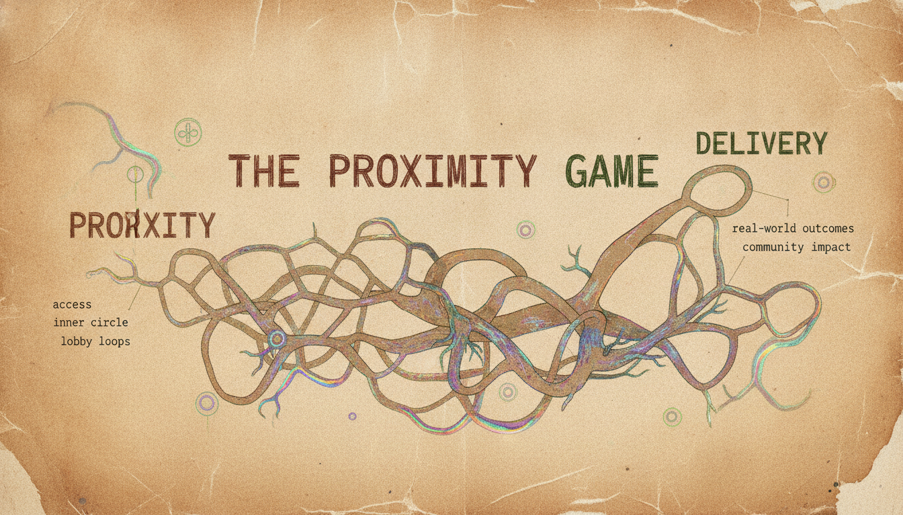
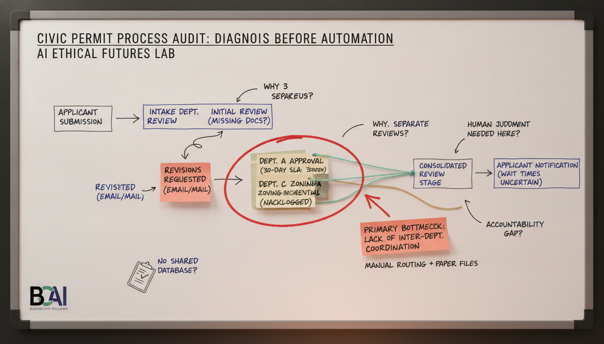
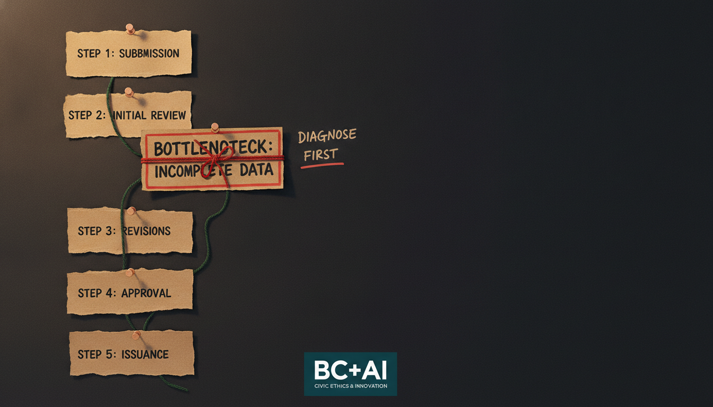
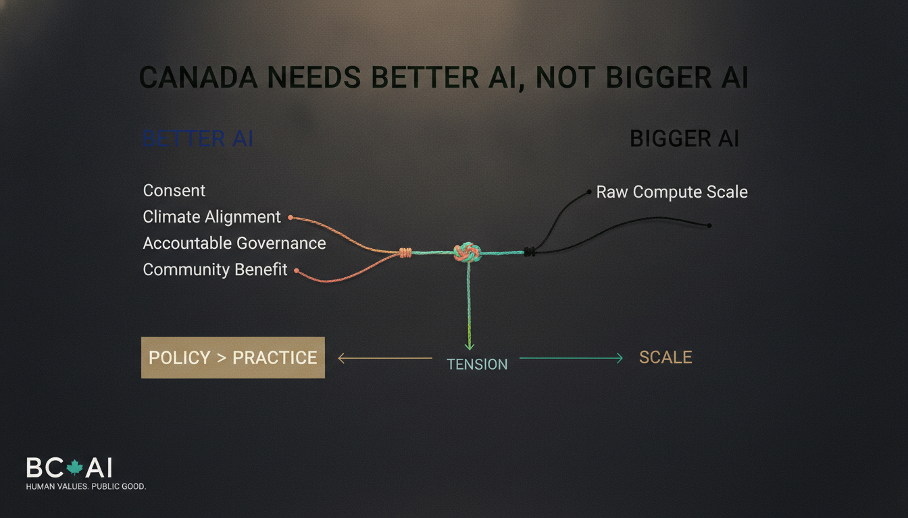
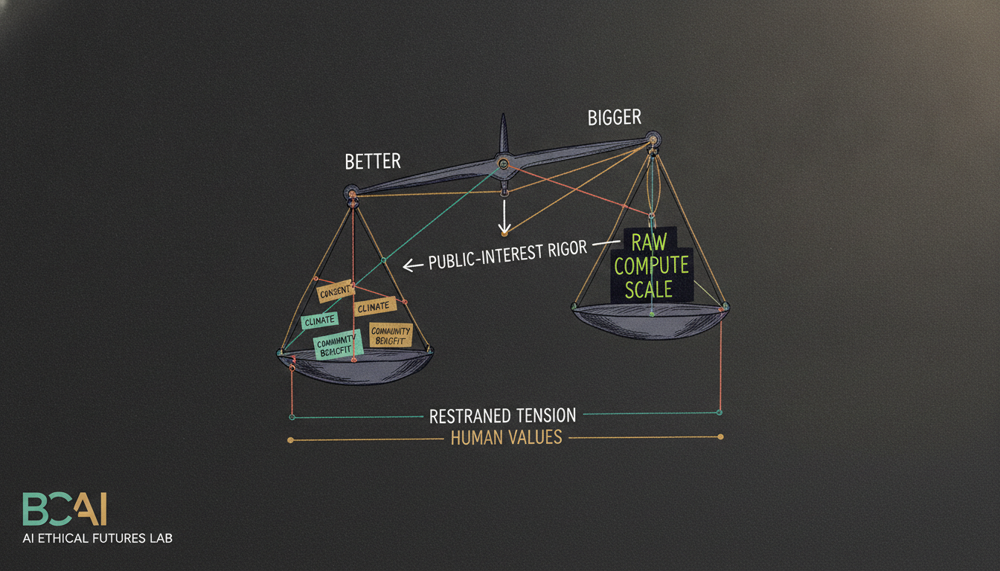
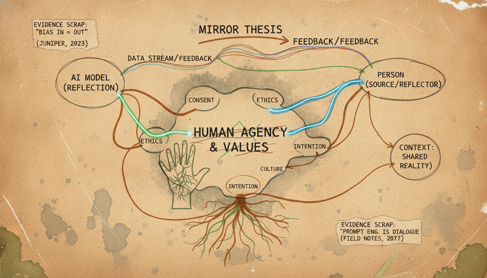
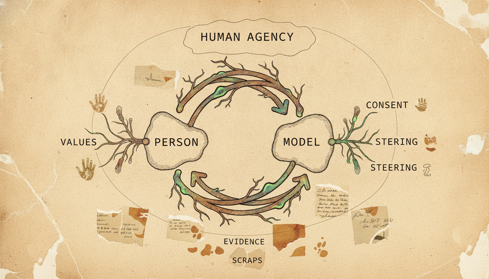
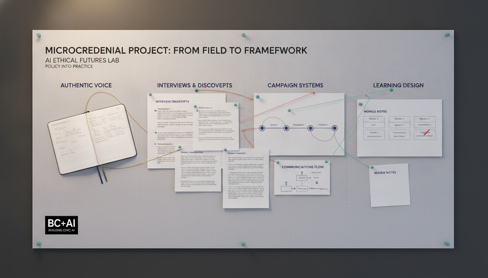
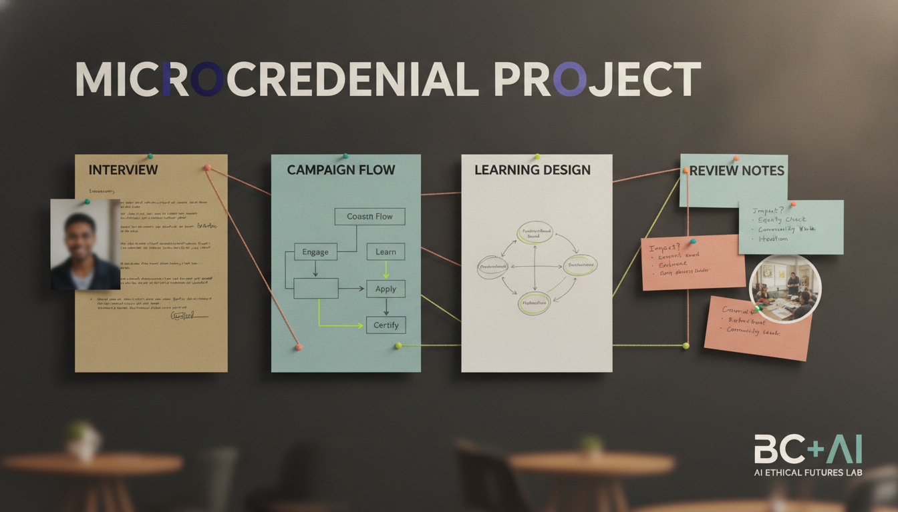

The Great Canadian Proximity Game
WP 12190 · style: hopecode

v1 title typo "PROXIIITY"

v2 pick
AI Won't Fix Your Broken Permit Process
WP 12035 · style: aefl

v1 pick

v2 "BOTTLENOTECK" garble
Canada Doesn't Need a Bigger AI Machine
WP 12030 · style: aefl · either works

v1 column ledger

v2 balance-scale
What Would Chat Do?
WP 12032 · style: hopecode · either works

v1 wide mirror map

v2 tight loop
How We Did It: SFU SIAT Microcredential
WP 12038 · style: aefl · ⚠ both misspell "MICROCREDENIAL"; v2 adds a face — recommend a real artifact

v1 no face, title typo

v2 has a face
Need a real asset (not generated — briefs preferred real photos)
- Zero to One: From Meetup to Movement (WP 12034) — supply a real BC + AI meetup/event photo.
- AI Media Appearances (WP 11879) — supply a real press still / headshot, or approve a proof-stack collage from real sources.